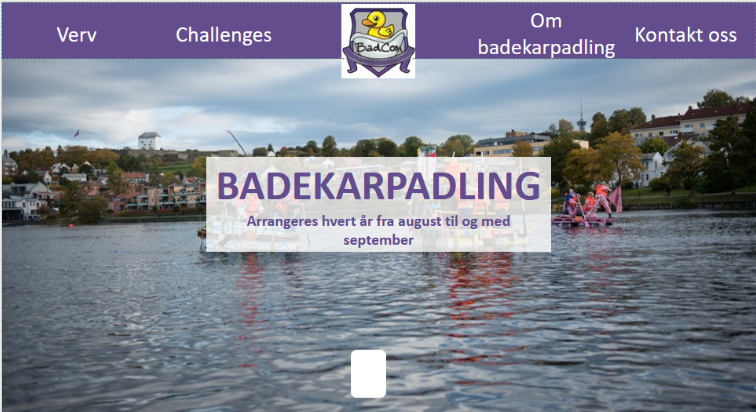
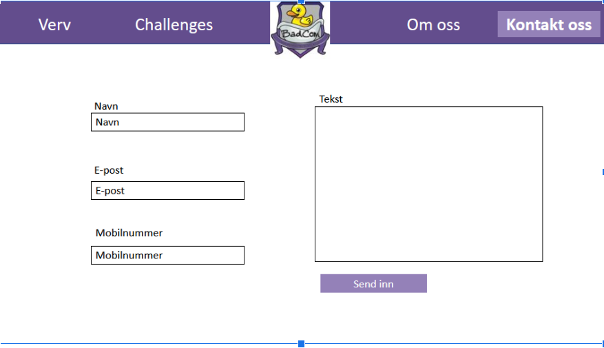
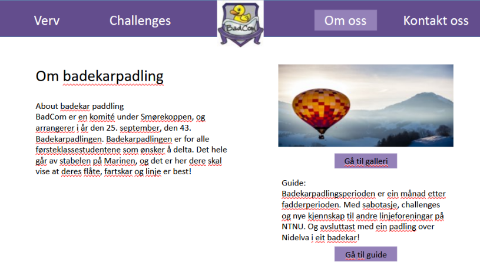
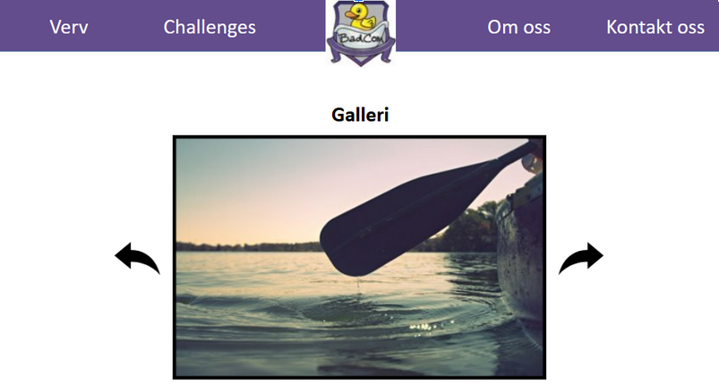
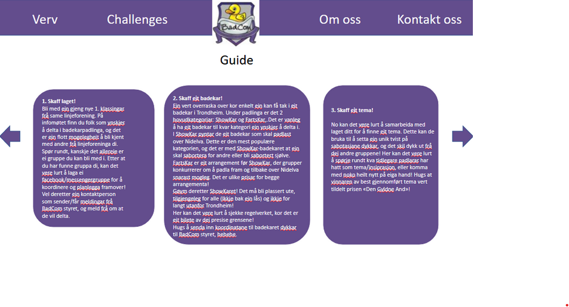
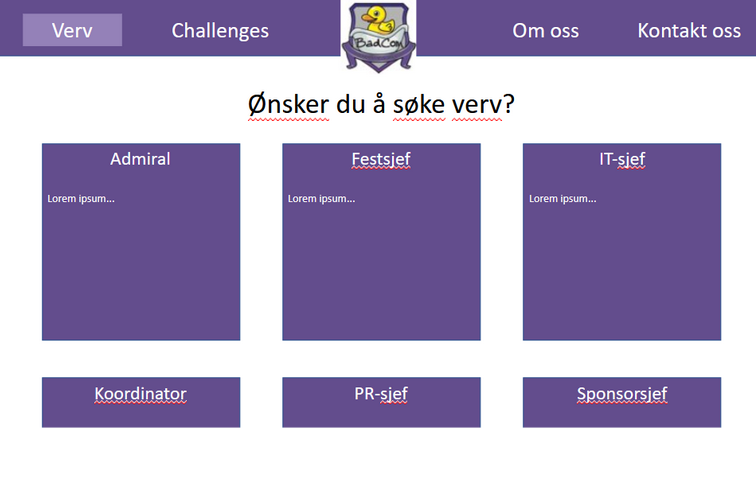
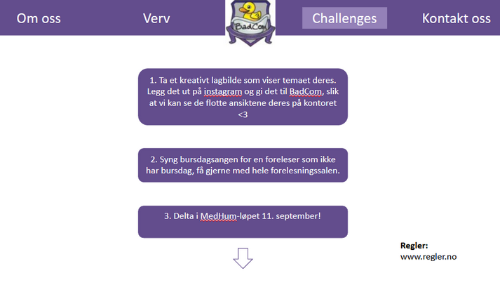

1. Document Details
P1 Project requirements
Snorre, Daniel, Arman, Jeremias, Markus, Brendan
IT2805 Oktober 04, 2022
2. Administrative Details
Client Name: Badkom
Website Name: Badekar Paddling
Contact person: badkom.mail@gmail.com
3. Purpose, goals audience
The purpose of the website is to spread awareness around BadCom and what badecarpadling is.
Our goal is to create greater engasjement around bathtub paddling by making an informative website which also is easy to use.
Bathtub paddling is a great way to make friends, compete against other groups in fun challenges and to build something creative.
Our main audience is students who would be interested in trying bathtub paddling or would like to join the board of directors.
4. Navigation Structure
The structure of the website will be based on a “slideshow” on our landing page that acts as the main way of navigating the website. It will be an intuitive and effortless way of being introduced to our various pages and most of all mobile friendly. You will scroll down on the landing page and have a small introduction to each of the pages, such as our voluntary work page. We will have an overall hierarchical structure while also allowing users to move between the site in a linear manner. There will be internal links from the landing page to our main pages, then links from those pages to sub-pages. Our goal is to make navigation intuitive and easy by having internal links readily available in order to be taken to other pages such as our contact page, challenges page, or about us page.
5. Page Layout an Apperance
The webpage is designed in such a way that one wants to explore the website.
We try not to use tables and large blocks of text, but interactive cards.
There is a universal purple design, which is the main color of the BadCom logo.
The navbar and the footer stick to their position and stay constant for every page.
The main page is a page one can swipe down to see an introduction of every section.
Here we took inspiration from Teslas webpage, which has a vertical slideshow style.
This is both mobile friendly and engages the audience by being easy to navigate.
An animation on the bottom of the main page will indicate that this is a swipeable page.
All pages, but three pages, can be reached with one click. The rest is reached by two clicks.
- Navbar and footer: #634d8d
- Blocks, cards and position indicator: #9481b8
- Clickables (links, buttons etc. ): #9481b8
- Font-family: 'Courier New', monospace;
- Size: use vw (“viewport width”)
- The logo will be clickable and will take the user to the main page.
Design choices fulfill goals of the website by being simple and having an interesting interactive layout. This will make the audience want to explore the page and become engaged in the content. In this way more students will want to partake in “Badekarpadling” and maybe join BadCom.
6. Content
Homepage.html
When visiting the website the user will view its homepage: a navigation bar on top with four different pages and the logo of Badkom.
The logo also has a function as it lets the user get back to the home page when pressing it.
At the home page the user will have access to either navigate through the navigation bar, or scroll downwards to the slides that describe each of the four pages.
The user will then be able to go over to their pages respectively when being on one of the slides. There will be a simple javascript game on one of these slides.
At the end of the page the user will find the footer with the address and the contact information of BadKom, along with their sponsors.

Contact-us.html
This page will be a contact form, which will give a visual response when a message-text has been submitted.
The response will be “Takk, meldingen din er sendt og vi tar kontakt så fort som mulig”.
It should also contain information about the physical location and the e-mail of badcom. This page will require javascript.

About-us.html
The about page contains text about badekarpadling and a little information about BadCom. There are two boxed links, one to the “Gallery.html” page, and one that goes to “Guide.html”.

Gallery.html
This will be a sliding gallery of pictures from “badekarpadling”. If possible there should be an indication of from which year the picture was taken. This page will require javascript functionality.

Guide.html
The guide page contains cards to help the users understand how to partake in badekarpadling. There are 9 points, which can be scrolled through.
The cards should be sized according to the amount of text on the cards. This will require Javascript.

Volunteer.html
The volunteer page has nine boxes regarding the different positions that one can apply for.
Under the boxes lists the information on what each position has to offer.

Challenges.html
This page contains swipe/scrollable cards. There are 21 challenges, so there will be 21 cards. If possible the text of each individual card should be imported from an individual “.txt” file. The rules link will go to a google docs document, containing the rules.

7. Minimum Requirements
The minimum requirements will be four javascript applications. Two of them will be the image gallery and a contact form. A third JS application will be a simple small game. A fourth will be the horizontal scrolling guide page.
8. Plan
| Hva | Beskrivelse | Ansvar | Deadline |
|---|---|---|---|
| Nav.bar | Lage navigasjonsbar til hele nettsiden | Snorre | 21.10 |
| Om_oss.html | Side med info om badekarpadling. Link til galleri. Link til guide. | Brendan | 21.10 |
| Kontakt_oss.html | Siden med form for kontakt | Brendan | 21.10 |
| Galleri.html | Galleri | Brendan | 21.10 |
| Guide.html | Guide Siden med info om hvordan delta | Markus | 21.10 |
| Hovdeside.html | Lage hovdesiden med en scrolle-funksjon med tilgang til de andre sidene. | Snorre | 05.11 |
| Verv.html | Side med bokser som viser mulige stillinger innad i verv. | Arman | 05.11 |
| Challenges.html | Kort med challenges | Jeremias | 05.11 |
| Galleri.js | Slideshow funksjonalitet | Brendan | 05.11 |
| Guide.js | Guide Sliding cards funksjonalitet | Markus | 05.11 |
| Kontakt_form.js | Form funksjonalitet | Daniel | 05.11 |
| Spill.js | Enkelt badekarpadling spill | Snorre | 05.11 |
| Footer | Ha en footer med info som sponsorer, kontaktinfo og evt. kart funksjonlaitet | Daniel | 05.11 |
| Footer | Ha en footer med info som sponsorer, kontaktinfo og evt. kart funksjonalitet | Daniel | 05.11 |
| Kontroller | Kontroller funksjonalitet og sjekk hverandres arbeid | Alle | 08.11 |
| Kontroller | Kontroller funksjonalitet og sjekk hverandres arbeid | Alle | 08.11 |
| Evt.Brukertest | Få andre til å teste | Alle | 12.11 |
| Endelige endringer | Gjøre endelig endringer ut i fra tilbakemelding | Alle | 18.11 |
Mappestruktur
- CSS
- Style.css
- HTML
- Hjem.html
- Om_oss.html
- Challenges.html
- Verv.html
- Kontakt_oss.html
- Galleri.html
- Guide.html
- Spill.html
- Javascript
- Bildegalleri.js
- Guide.js
- Kontakt_form.js
- Spill.js